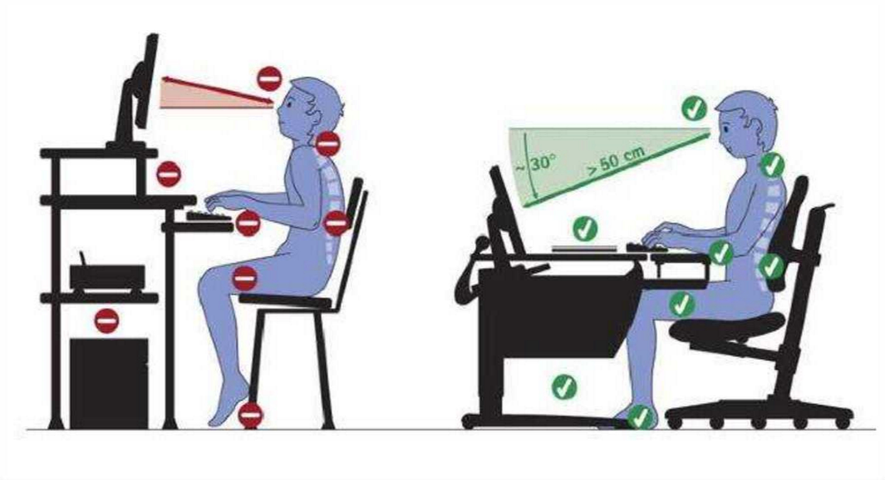

Вероятность негативных последствий от использования персонального компьютера такая
же, как и при эксплуатации другой бытовой техники. Ведь общеизвестно, что важно
соблюдать меры безопасности с микроволновой печью, утюгом или электрочайником.
Пренебрежение элементарными рекомендациями имеет серьезные последствия для их
владельцев. Компьютер – это такой же потенциальный источник угроз для здоровья,
имущества и даже жизни пользователя.
Непрямой вред, который незаметен сразу, это ущерб здоровью:
уже ни у кого не вызывает сомнений в существовании огромной негативной
нагрузки на зрение, которое становится причиной его необратимого ухудшения,
покраснений и синдрома «сухого глаза»;
неправильная поза при работе за компьютером вызывает многочисленные
заболевания суставов, грудной клетки и регулярные боли различного характера;
вокруг стола не должно быть свисающих проводов, пользователь не должен
контактировать с ними;
важна целостность корпуса розетки и вилки;
помещение должно хорошо вентилироваться и охлаждаться в жаркую пору года. Важен
своевременный отвод избыточного тепла от техники.
Перед тем, как включить компьютер, необходимо уделить пару минут следующим
действиям:
нельзя начинать работу на технике с видимым повреждением. В случае
обнаружения трещины на корпусе или повреждений другого рода, нужно
обратиться за помощью в сервисный центр. Это же относится к ПК с
неисправным индикатором включения/выключения;
предметы на столе не должны мешать обзору, пользованию мышкой и
клавиатурой. Поверхность экрана должна быть абсолютно чистой;
на системном блоке не должно находиться никаких предметов, так как в
результате вибраций может нарушиться работа устройства. Нужно убедиться в
том, что никакие посторонние предметы не мешают работе системе охлаждения;
запрещается начинать работу в помещениях с повышенной влажностью, а также в
случае, если рядом присутствуют открытые источники влажности (лужи, мокрый
пол). Включить технику можно лишь после полного высыхания окружающих
предметов.
Поскольку персональный компьютер обладает всеми свойствами электрического прибора,
то на него распространяются основные правила безопасности при взаимодействии с
проводниками тока:
рекомендуется избегать расположения жидкостей рядом с модулями компьютера;
нельзя очищать поверхность компьютера от загрязнений, когда он находится во
включенном состоянии;
в помещении с компьютерами непозволительно курить или употреблять пищу
непосредственно на рабочем месте;
при ощущении даже незначительного запаха гари, нужно как можно быстрее
выключить ПК из сети и обратиться к ответственному за обслуживание
компьютерной техники.
Как было сказано выше, неправильная работа с персональным компьютером таит в себе
множество угроз для здоровья человека.
Что бы минимизировать это влияние даже при длительном нахождении за
монитором, стоит навсегда запомнить следующие постулаты:
расстояние между глазами пользователя и экраном составляет не менее
полуметра. Но пользователь должен быть в состоянии дотянуться кончиками
пальцев до верхнего края монитора;

клавиатура размещается за 20-30 сантиметров от края стола;
стул стоит таким образом, что бы спина лишь немного упиралась в его
спинку. Высота сидения позволяет держать ровную осанку;
локти согнуты под прямым углом, а в кистях рук, лежащих на столе, не
чувствуется напряжения;
локти не висят в воздухе, а комфортно располагаются на подлокотниках
кресла или столешнице. Их позиция существенно не меняется при передвижении
мышки;
ноги упираются в твердую поверхность, распрямлены вперед, а не
подогнуты под себя;
если пользователь носит очки, то нужно убедиться в том, что он может
свободно регулировать угол наклона экрана;
чрезвычайно важна периодическая зарядка. Каждый час нужно вставать с
кресла, разминать мышцы и суставы. Ведь, несмотря на неподвижность, они
испытывают огромную нагрузку, пребывая в неестественном положении.
Обязательно нужно делать разминку для глаз: круговые и линейные движения
открытыми глазами, моргание и расфокусирование.